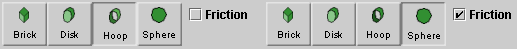
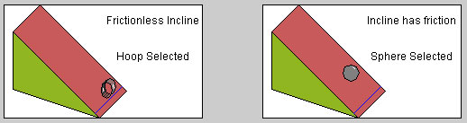
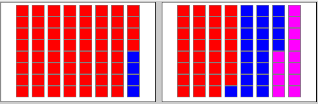

There are three basic control buttons. One of these, the Play/Pause button, is a dual button. The buttons are, from left to right:
-
 Returns
the simulation to the starting point with the
previously chosen settings. After clicking
Rewind, click Play to restart the motion.
Returns
the simulation to the starting point with the
previously chosen settings. After clicking
Rewind, click Play to restart the motion.
-
 Clicking
the Play button starts the race.
Clicking
the Play button starts the race.
 After
the Play button has been clicked, it changes into a
Pause button. Click the Pause button if you want to
get a 'snapshot' of the motion at a given instant.
When the Pause button has been clicked, it reverts
into the Play button. To resume the motion, click
Play once more.
After
the Play button has been clicked, it changes into a
Pause button. Click the Pause button if you want to
get a 'snapshot' of the motion at a given instant.
When the Pause button has been clicked, it reverts
into the Play button. To resume the motion, click
Play once more.
-
 Resets
the applet to its default setting.
Resets
the applet to its default setting.
Adjustments in the initial settings can only be made after first clicking REWIND or RESET.


The applet allows you to compare the speeds with which two objects moving on equally sloped inclines move down the inclines. To select the two objects, click on the appropriate button for the left and right incline. To change your selection, click on another button.
For each incline, a checkbox can be checked if you want to have friction between the incline and the object moving down the incline. The applet indicates besides each incline whether the incline has friction or not.
In the situation shown here, the right incline has friction, the left one does not.

Each round object has a yellow dot painted on it that lets you observe whether the object is rolling or sliding down the incline.
A small flag  is raised at the finish line for the object that
makes it to the finish line first, and the color of the
finish line changes from blue to green when the object
passes the line.
is raised at the finish line for the object that
makes it to the finish line first, and the color of the
finish line changes from blue to green when the object
passes the line.

At each instant during the motion, the way the total energy of each object is divided up into potential energy PE (blue), translational kinetic energy TK (red) and, if applicable, rotational kinetic energy RK (magenta) is indicated by a set of 1-J blocks for each object.

The amounts of potential, translational kinetic, and rotational kinetic energy of each block are displayed and updated throughout the motion.